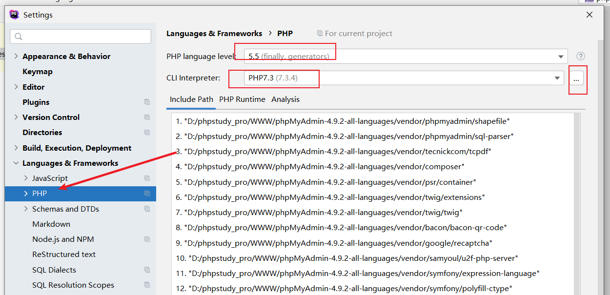
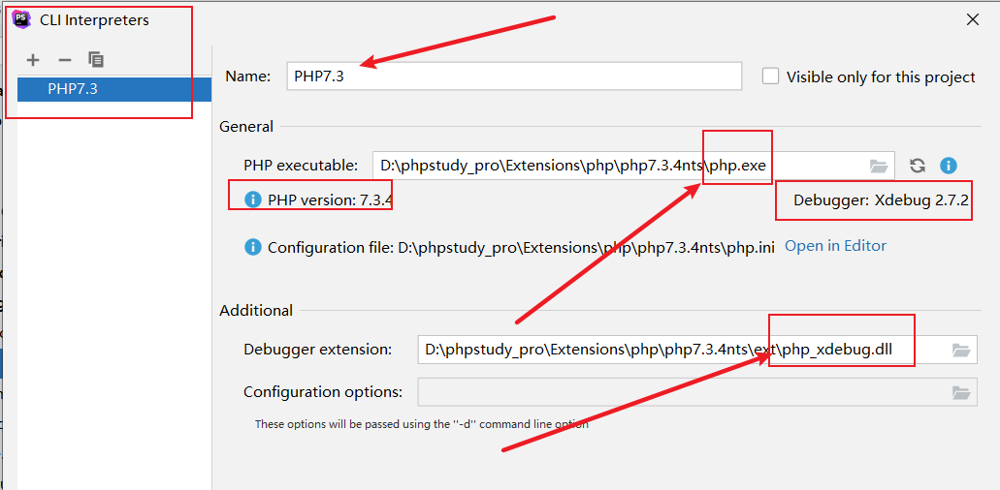
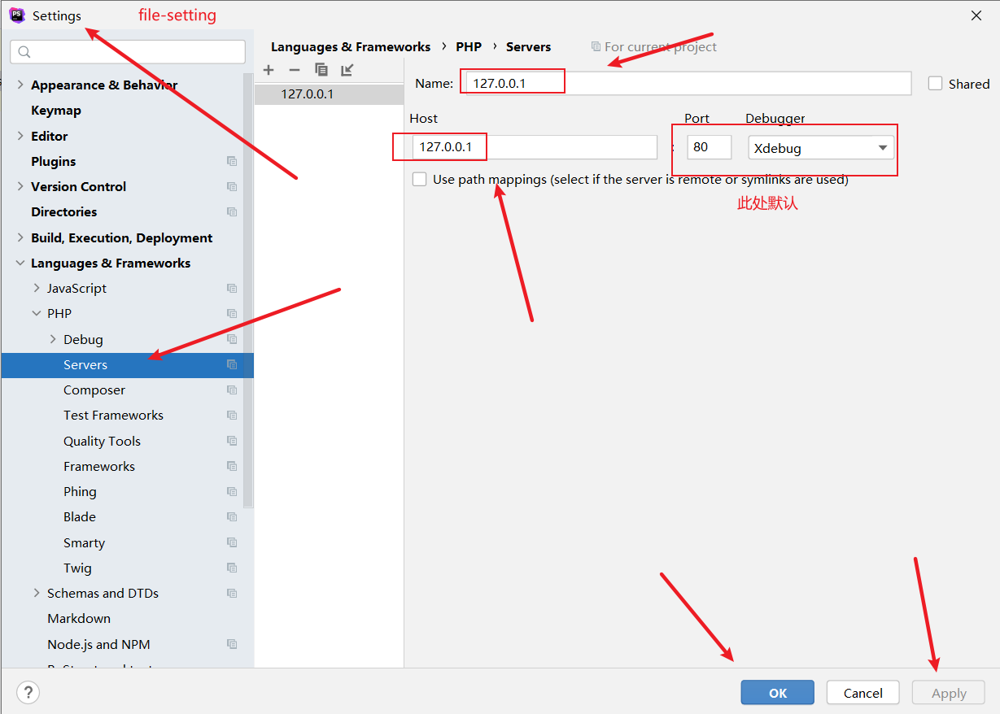
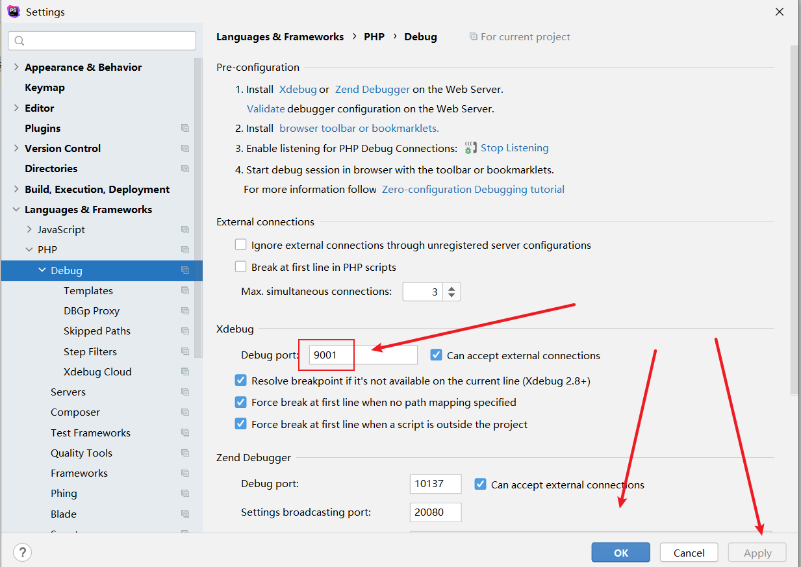
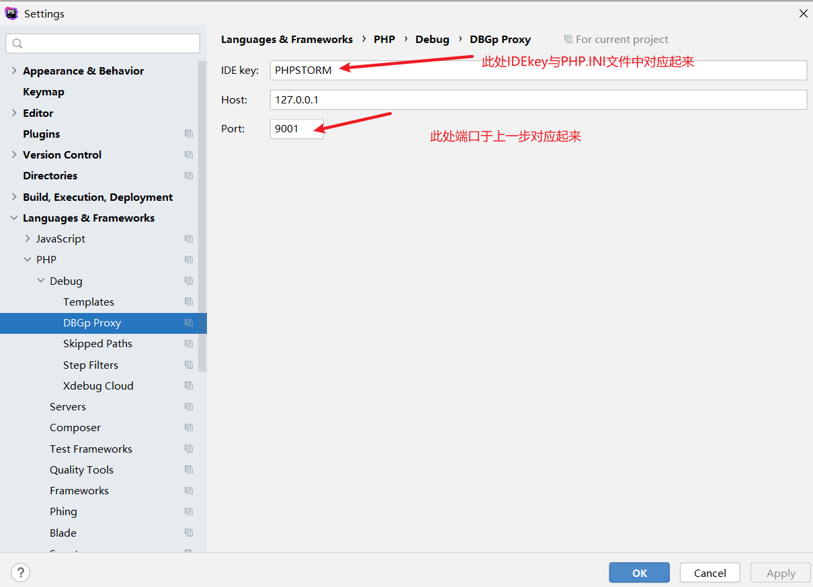
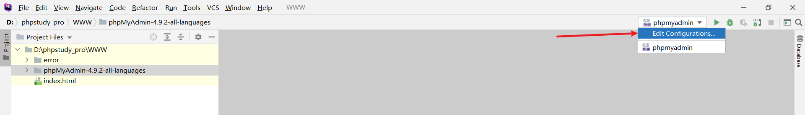
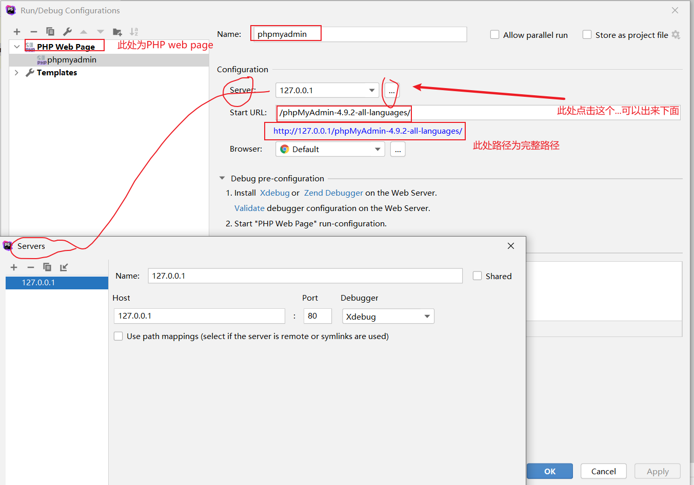
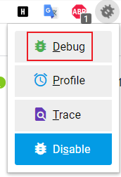
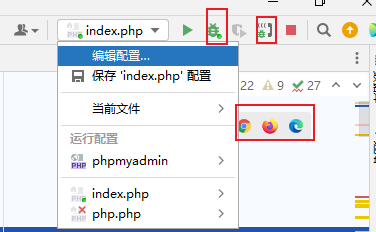

phpstrom配置xdebug记录
简单整理一下之前记录的东西。
准备工作
phpstrom
关于phpstrom的安装和激活自行解决。
phpstudy
1 | https://www.xp.cn/ |
支持CentOS、Ubuntu、Debian、Fedora、deepin，Web端管理，QQ群及论坛技术支持
一键创建网站、FTP、数据库、SSL；安全管理，计划任务，文件管理，PHP多版本共存及切换；自带LNMP与LAMP
xdebug
想要动态调试就离不开xdebug，可以从下面选择合适自己的版本进行安装：
1 | 安装手册：https://xdebug.org/docs/install |
这个位置下载的版本一定要跟自己的php版本对应起来比如
1 | https://xdebug.org/files/php_xdebug-3.1.6-7.3-vc15-x86_64.dll |
下载完直接丢在phpstudy_pro\Extensions\php\php7.3.4nts\ext这个目录中
环境配置
设置PHP环境
phpstrom中的设置路径为：file-seting-languages-PHP（文件-设置-语言-PHP）这个路径跟phpstrom的版本有关系可能存在不同的路径，但是都是要找这个PHP设置：

弹出如下信息可以设置xdebug和相关的PHP版本

php.ini在最后添加如下代码：下面的路径记得修改
1 | [XDebug] |
zend_extension的值应该是我们刚刚下载的php_xdebug.dll所在的位置
在PHPstrom中设置Server
路径为：file-seting-languages-server

设置PHPdebug
路径为file-seting-languages-debug

设置DBGp proxy
路径为file-seting-languages-debug-DBGp proxy

设置configurations
路径

具体设置

网站源码要在WWW目录下，浏览器设置xdebug插件为debug

phpstrom下断点开始调试：

本博客所有文章除特别声明外，均采用 CC BY-NC-SA 4.0 许可协议。转载请注明来自 Valen的博客！
 微信
微信- 支付宝